6.s198 Final Project by Lucy Li and Hayley Bergman
Running out of ideas in the kitchen? Need to spice things up when cooking? Look no further, and use a recipe generator! Inspired by a mutual interest of food, we were interesting in generating new and novel recipes. Using a neural network and a recipe data set, our trained model can generate brand new recipes not included in the original data.
We are able to generate both a list of ingredients, as well as a set of instructions. Following the generation of the recipes, we looked at how feasible these recipes would be for a human to actually follow, and adjusted various aspects of the model to produce the most feasible recipes.
The goal of this project was to train a neural net that generate new and novel recipes.
Recurrent neural networks, or RNNs, are a deep learning model that can remember information that occurs over time. We chose to use an RNN for our project, because it is an established approach to generation problems. In our project, RNNs were a good approach to generation because they are able to predict what comes next in the sequence based on what's already been seen. As shown below, RNNs take new information as input, but also reroute predictions it makes back into the neural net to influence the next prediction.
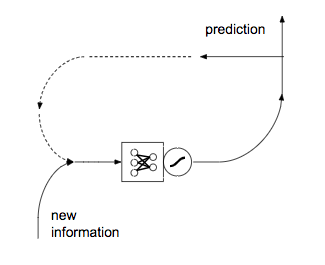Although RNNs are good enough in many generating scenarios, it's still possible to do better. If we want to use more than just the prediction for the most recent state, then we must use Long Short-Term Memory RNNs, or LSTMs. By adding memory with an LSTM, we're able to keep track of predictions made for prior states, as well as decide which of these predictions are actually important enough to keep. An LSTM works better than a simple RNN in our case, because we're dealing with natural language, which is sequential data. As seen below, LSTMs are RNNs with the addition of memory.
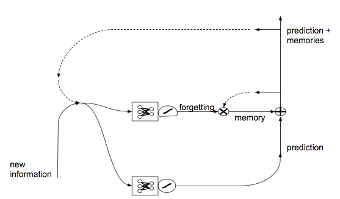Another mechanism we briefly looked at implementing was a gated recurrent unit, or GRU. Like LSTMs, GRUs are a modification on a standard RNN. GRUs use update and reset gates to decide which information should be passed through to the output. These gates are special because they can be trained from keeping data much earlier in the training process. GRUs aim to solve the same problems as LSTMs, so we chose to use LSTMs to train our model.
The data to feed into our neural network was obtained from the Epicurious recipe dataset (https://www.kaggle.com/hugodarwood/epirecipes) on Kaggle. Their database had very extensive information on over 20,000 recipes. The columns included recipe names and had other interesting data such as rating, type of cuisine, and more.
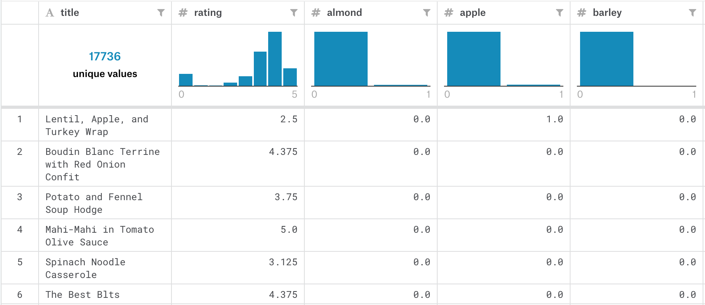In order to format our data correctly to feed into the model, we had to write a short Python script to convert our recipe dataset in .json to a .txt file.
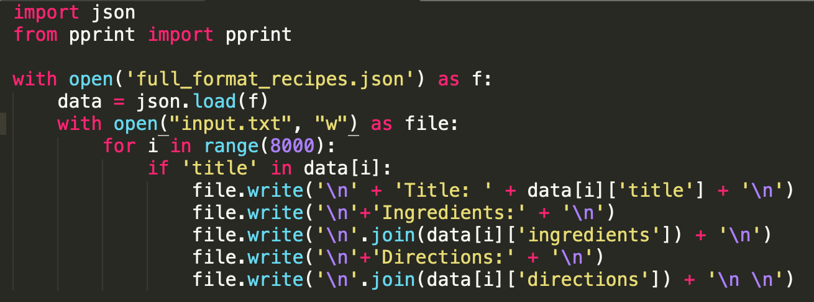Because our recipes were provided in a .json file, this Python code extracts all of our relevant information (title of recipe, list of ingredients, and directions) and converts it to a string format.
As mentioned above, we chose to use an RNN to develop our model, as it's an acknowledged established approach to generation problems. Specifically, we were interested in either a word-RNN or a character-RNN. The word RNN would split the input text by words, while the character-RNN addresses each character individually. We trained models with both networks, but ultimately chose to use the character-RNN. Sample results from both networks can be found in the results section further down.
The character RNN we used can be found at https://github.com/karpathy/char-rnn. This neural network supports training with an RNN, LSTM, or GRU. This network is written in Lua, and uses the Torch Neural Network Package to build the model. Below, you can see a sample of the training code that demonstrates how torch-rnn is used.
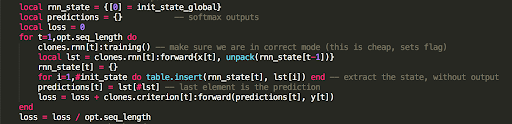In addition to choosing the type of neural network, this code allows the user to adjust many other parameters, including the model size, number of layers, and learning rate. See below for a full list of adjustable parameters.
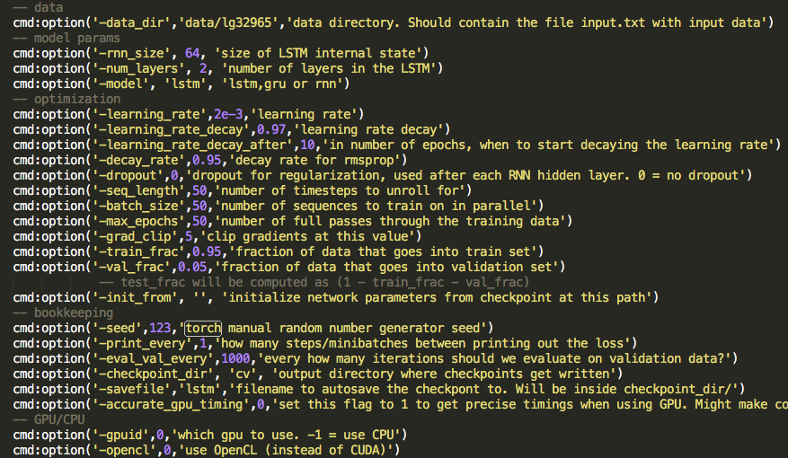As a user is training the network on text data,the neural network produces training checkpoints. These training checkpoints can then be fed back into the model to generate sample output. By storing the trained model in checkpoints, this allows for the user to store multiple models at once. This was convenient for our project, as we found some other architectures only allowed one set of data to be fully trained at a time, and would overwrite the existing model when new data was passed in.
Similar to when training, the user can adjust various parameters when generating a sample output. These parameters can be seen below.
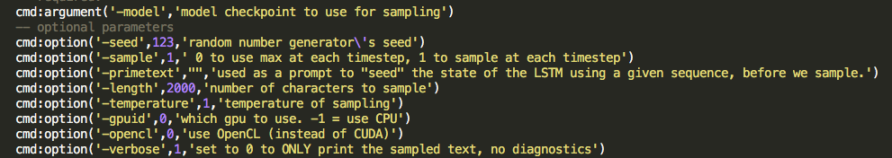https://github.com/karpathy/char-rnn
We achieved exciting and entertaining results using the character-RNN discussed above. As we were originally motivated by our excitement for food, we quite enjoyed the sample results we generated using this model.
In terms of evaluation, our main concern was the grammatical correctness of our generated recipes. Given that this was our primary concern, our recipes were not always functionally coherent. For example, in a given generated ingredient list, most of the words will not be misspelled. In addition, the units of measurement usually match up to the type of ingredient they are describing. However, the ingredients listed won't sound like a good combination to a human, and likely won't even include the ingredients mentioned in the title of the recipe. That being said, the grammatical correctness of our generated recipes produced entertaining results which can be found in more detail below.
In terms of overall coherency and least amount of misspellings, our best results came from training with an LSTM. As mentioned earlier, we trained on some sets of data that just included ingredients, and some that included both ingredients and instructions. Our most coherent and entertaining samples were those that included just ingredients, as it was quite difficult to produce coherent directions. A sample of both can be seen below, with the first including just ingredients, and the second with ingredients and directions.
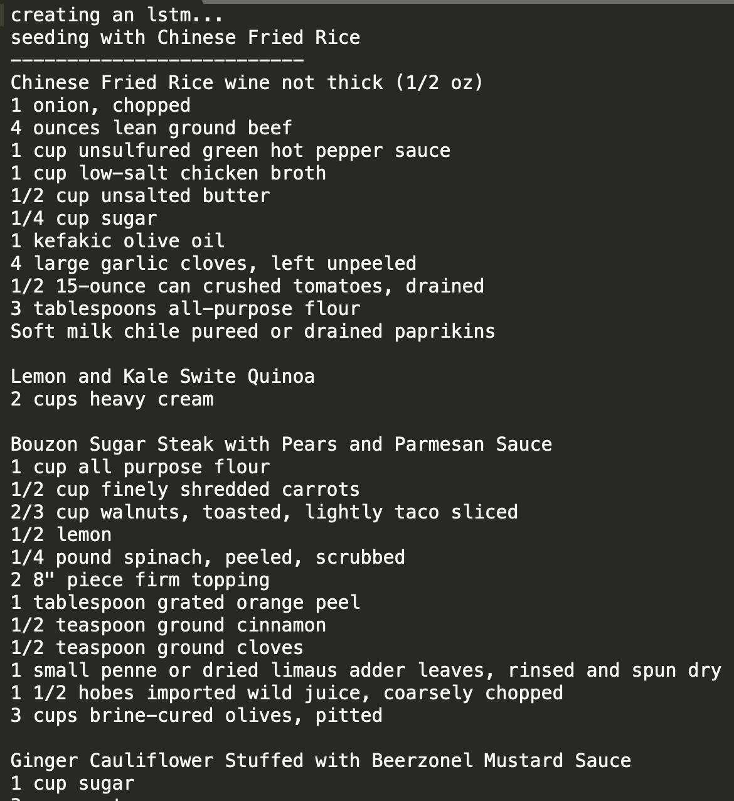 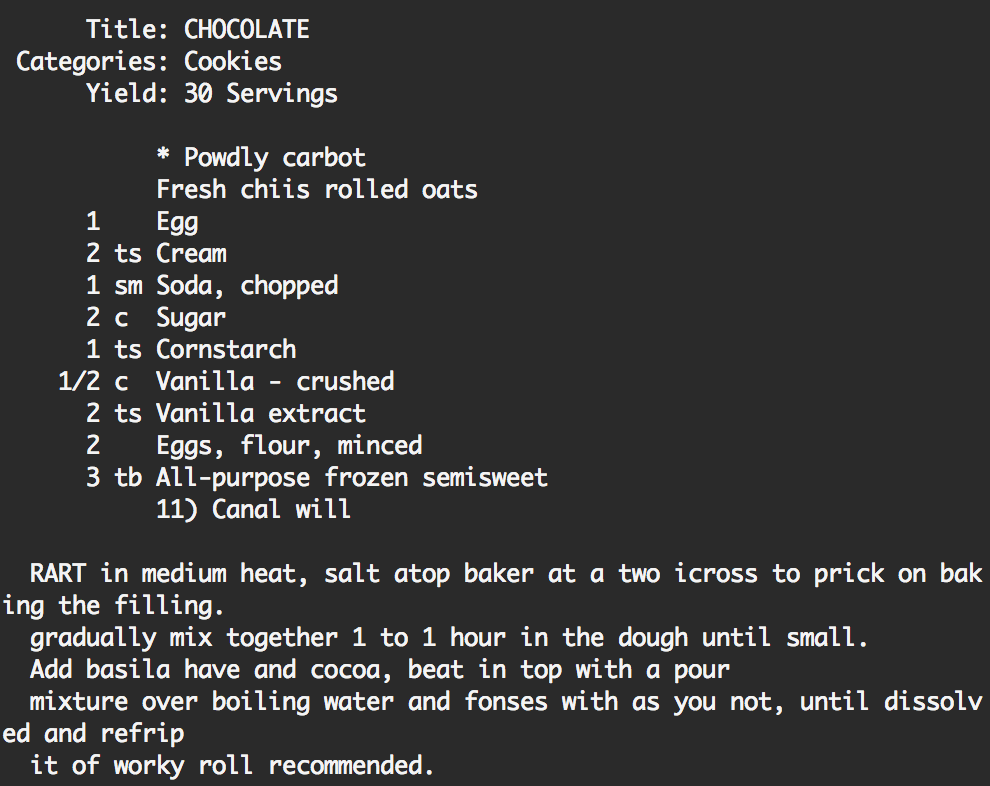We achieved similar results as above when using a simple RNN. This was a bit surprising to us both, as we thought the LSTM would be significantly better, given its usefulness when training on natural language. As seen below, training with a simple RNN was also able to produce interesting ingredients and directions.
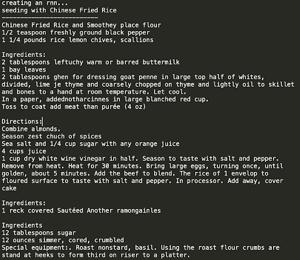After training with the LSTM, we also trained a GRU on our data. Although similar runtime as the training for the LSTM, the results were significantly less coherent. While we could consistently produce ingredients without misspelled words with the LSTM, that was not the case with the GRU. As seen below, neither the ingredients nor directions generated by the GRU are grammatically correct English.
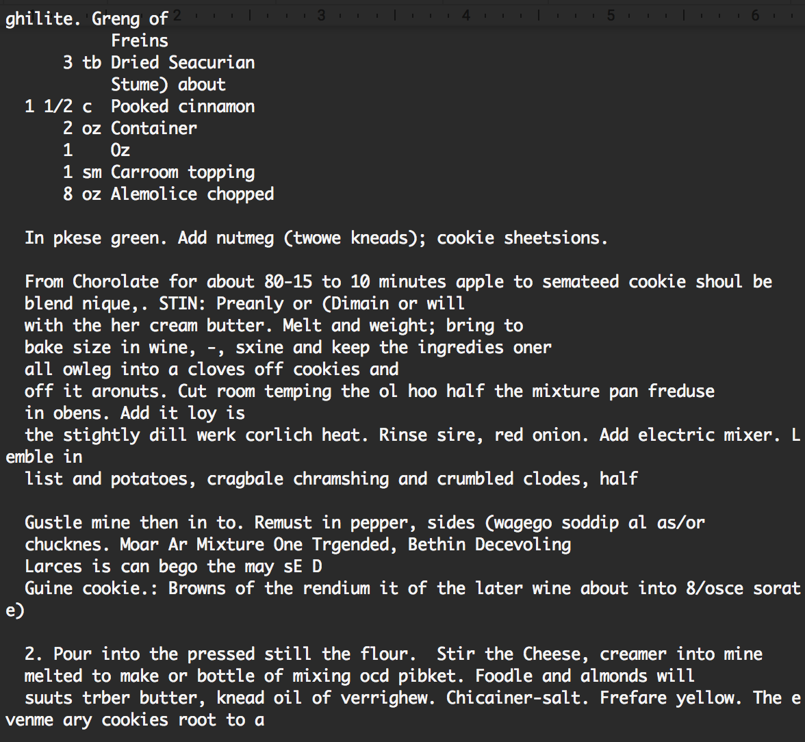As mentioned above, we initially experimented with using a Word-RNN rather than a character RNN. We were concerned with the misspellings we were getting using the character-RNN, which is why we chose to look into using a Word-RNN. Because the Word-RNN doesn't break up words, we would not have any misspellings, but would trade that for overall coherency. We quickly found that the Word-RNN wasn't the right direction for us to go, as it produced a truly random sample of words, as seen below.
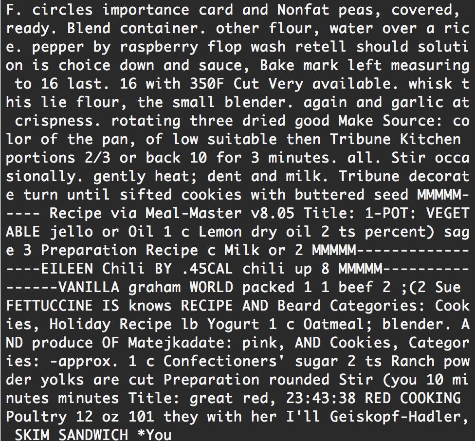In the future, if given the opportunity and time, we would like to see what interesting results our model could output if we trained it on other various aspects of recipes including the nutrition facts, cuisine type, rating, and more. We would like to experiment on how well a GANs model would perform to generate new recipes. In addition, either through more training, different parameters to our model, or pruning our results, we would like to see how we could increase our recipe accuracy and have our recipe actually correlate with ingredients, and see if we could create realistic recipes to try in the kitchen.
The two of us learned new things at every step in the process of building our model. During the data collection stage, we both learned how to find and handle large sets of data, and how to understand if the data fits the project needs and requirements. After finding the data, we had to learn how to preprocess it, and adjust it for the requirements of our project. Once we bagan training the model, we learned how to adjust the parameters of a neural net, and gain an understanding of how each parameter functionally affects the model. By getting to quickly see the results on our data achieved by adjusting parameters such as network size, number of layers, and seed text, we were able to make generalizations that allowed us to understand recurrent networks better as a whole.